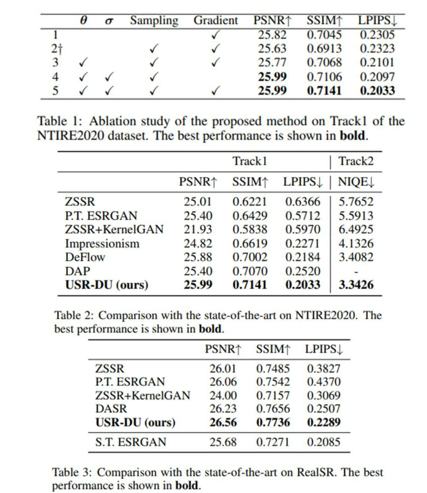
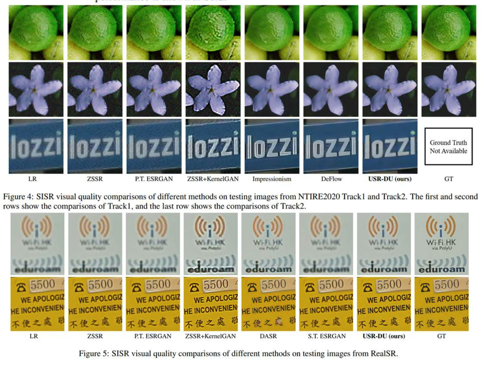

Abstract
Acquiring degraded images with paired high-resolution (HR) images is often challenging, impeding the advance of image super-resolution in real-world applications. By generating realistic low-resolution (LR) images with degradation similar to that in real-world scenarios, simulated paired LR-HR data can be constructed for supervised training. However, most of the existing work ignores the degradation uncertainty of the generated realistic LR images, since only one LR image has been generated given an HR image. To address this weakness, we propose learning the degradation uncertainty of generated LR images and sampling multiple LR images from the learned LR image (mean) and degradation uncertainty (variance) and construct LR-HR pairs to train the super-resolution (SR) networks. Specifically, uncertainty can be learned by minimizing the proposed loss based on Kullback-Leibler (KL) divergence. Furthermore, the uncertainty in the feature domain is exploited by a novel perceptual loss; and we propose to calculate the adversarial loss from the gradient information in the SR stage for stable training performance and better visual quality. Experimental results on popular real-world datasets show that our proposed method has performed better than other unsupervised approaches.
Paper & Code & Demo
Experimental Results

Result Visualization
-

Citation
@inproceedings{ijcai2022p176,
title={Learning Degradation Uncertainty for Unsupervised Real-world Image Super-resolution},
author={Ning, Qian and Tang, Jingzhu and Wu, Fangfang and Dong, Weisheng and Li, Xin and Shi, Guangming},
booktitle={Proceedings of the Thirty-First International Joint Conference on Artificial Intelligence, {IJCAI-22}},
publisher={International Joint Conferences on Artificial Intelligence Organization},
editor={Lud De Raedt},
pages={1261--1267},
year={2022},
month={7},
note={Main Track},
doi={10.24963/ijcai.2022/176}}
Concat
Qian Ning, Email: ningqian@stu.xidian.edu.cn
Jingzhu Tang, Email: tangjingzhu@stu.xidian.edu.cn
Fangfang Wu, Email: ffwu_xd@163.com
Weisheng Dong, Email: wsdong@mail.xidian.edu.cn
Xin Li, Email: xin.li@mail.wvu.edu
Guangming Shi, Email: gmshi@xidian.edu.cn
Comment